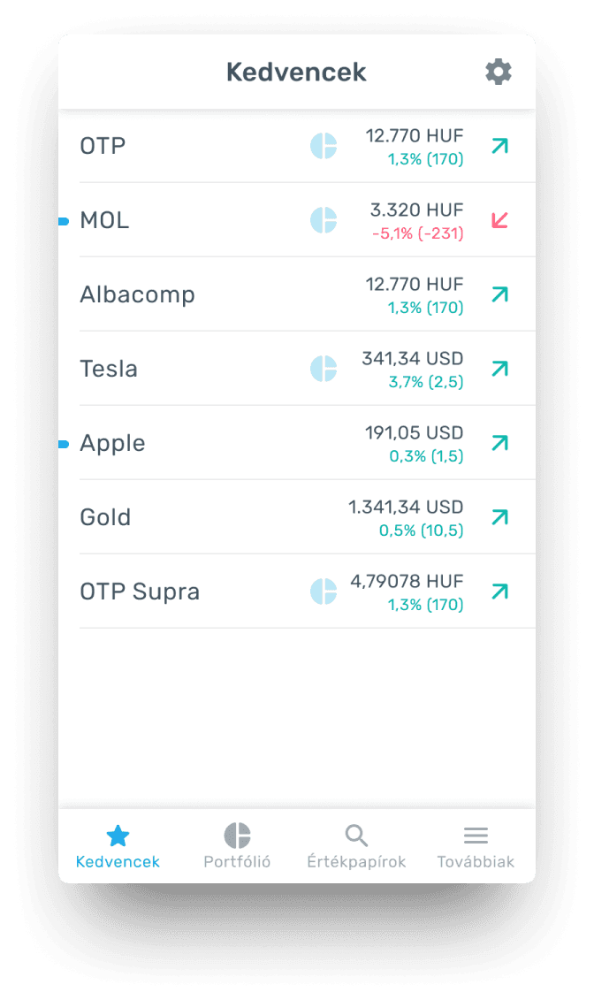
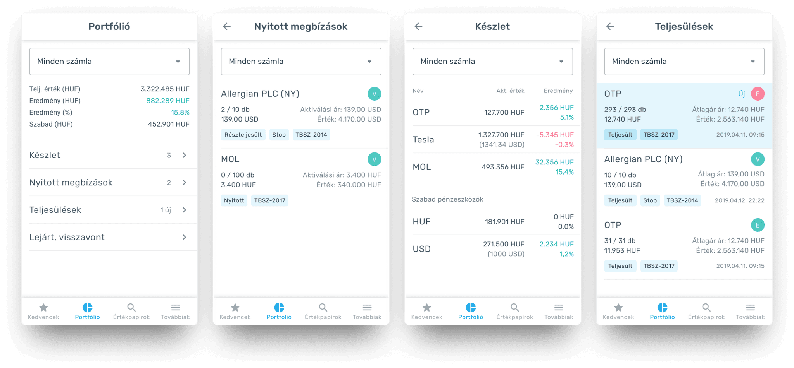
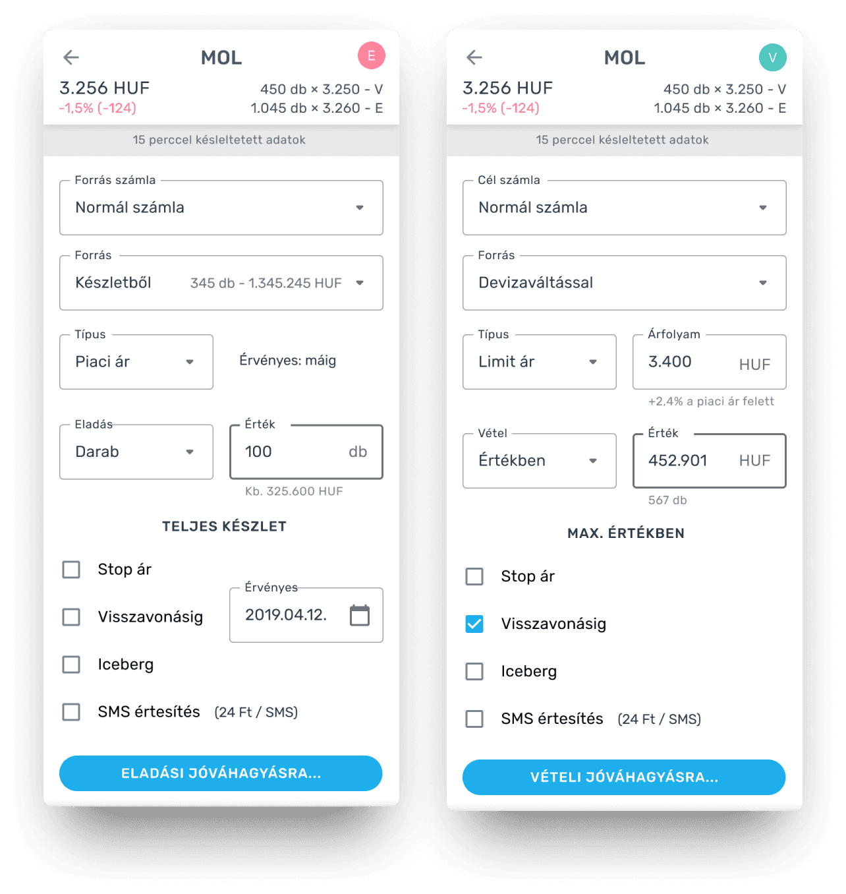
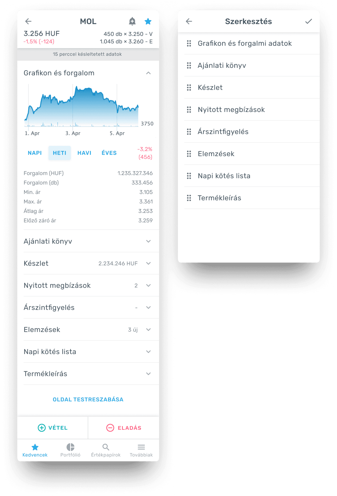

Transforming portfolio management

MobilBroker is an award-winning (2020) trading app developed for KBC Equitas, one of Hungary’s largest stock exchange providers. MobilBroker was created as a cross-platform stock trading app to expand on the previously redesigned web platform, meeting user needs for mobile trading and keeping KBC Equitas competitive.
Problem
“I want to see my portfolio and buy or sell stocks anytime with only a tap even if I’m in a meeting.”
This came from my client’s biggest former customer, who had switched to a competitor’s mobile app and left the client’s web platform.
My role and the scope
I worked with the client’s product, sales and marketing teams. I was in charge of the design process, the user interviews and usability tests.
The project took 2 months.
Finding the top indicators that drive users’ stock decisions
User interviews revealed that users only need a few pieces of information: the direction of the daily price change, the price and, if the stock is in their portfolio, the change in value and percentage and whether it has an open position.

Multiple account handling to help to understand the available resources, profit gains and open positions
Traders usually have many trading accounts for tax optimisation in Hungary. Traders can select any account from the selector on every portfolio page.

Saving time and reducing unnecessary calculations during buying and selling
Traders no longer need to check how many shares they hold and what they’re worth. There is a dedicated button to sell everything, and they can sell by value, not only by quantity as with competitors. The system also handles automatic currency exchange or an investment loan to help traders to trade in the biggest volume without leaving the page. Users couldn’t wait to see these features go live.

Every trader has different needs: a customizable product page for fast decision-making
We couldn't find best practices or patterns for the ultimate product page during the interviews and tests. Every trader was different. So we decided to make the product page flexible. Traders can rearrange sections and close the unnecessary ones with accordion navigation. Some sections have dedicated subpages for extra information.
